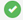
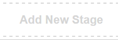
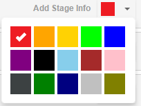

Configuration Workflow
What is workflow?
Workflow refers to the list of all stages associated to a job. This section allows you to setup your workflow by giving you the chance to add new stages, delete existing ones (except the first and last), change names for the existing stages etc. The steps below explain the various functionalities that can be performed using Workflow:
This page firstly shows you the various Job Progress stages.
- Go to Settings, click on Workflow from the left panel.
- In order to change a Stage's name, hover the mouse on the stage name and you'll see
, click on it to change the stage name and next click on  to save the new name. - In order to add information to a particular stage, click on Add Stage Info and enter the information you want to add in the text area and hit Done User.
- You can also change colors for each stage. Click on the colored box's dropdown (as shown below), select the desired color.
- In order to add files to a particular stage, click on
, browse and upload new files from your PC. - In order to delete a stage, click on
. You'll get a confirmation message, click on Yes to delete the stage. - To add a new stage, click on  . A new stage will be added, you can edit its name, change the color by following the steps as mentioned above.
- All these changes will be reflected only if you save them. You can save the changes by clicking on Save Workflow which is on the right side of your screen.

Note: The system does not allow you to delete the first and last stage.